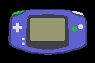

6. GBA 按键（又称键）
简介
正如你无疑已经知道的，GBA 有一个 4 方向十字键（D-pad）；两个控制键（Select 和 Start）；两个常规发射键（A 和 B），以及两个肩键（L 和 R），总共 10 个按键。这就是你在用户与 GBA 交互方面仅有的一切，而对大多数目的来说已经足够。按键处理的原则相当简单：你有一个存放按键状态的寄存器，根据它的位是置位还是清除来判断哪些键被按下。我会讲这个，但也会给出一些更先进的、你在某个时候大概会想要的函数。
按键寄存器
按键寄存器 REG_KEYINPUT
如前所述，GBA 有十个按钮，常被称为键。它们的状态可以在位于 0400:0130h（又称 REG_P1）的 REG_KEYINPUT 寄存器的前 10 位中找到。确切布局如下所示。我不会逐位描述，因为它应该相当明显。我使用的已定义常量的名字是 “KEY_x”，其中 x 是按钮名，大写。
| F E D C B A | 9 | 8 | 7 | 6 | 5 | 4 | 3 | 2 | 1 | 0 |
| - | L | R | down | up | left | right | start | select | B | A |
检查一个键是否按下（down）原本会很明显，要不是有那么一个小细节：当键按下时，位是被清除的。所以 REG_KEYINPUT 的默认状态是 0x03FF，而非 0。因此，检查 key 是否按下是这样做的：
#define KEY_DOWN_NOW(key) (~(REG_KEYINPUT) & key)
万一你的位运算知识有点模糊（把它弄清楚。快！），这首先把 REG_KEYINPUT 反转为更直观（也更有用）的“按下时位置位“设置，然后用你想检查的键进行掩码。注意 key 实际上可以是多个键的组合，结果将是实际按下的键的组合。
按键位是低电平有效，意味着它们在按钮被按下时被清除，在未被按下时被置位。这可能有点反直觉，但事实就是如此。
按键控制寄存器 REG_KEYCNT
就按键处理而言，你几乎所需的一切都可以用 REG_KEYINPUT 完成。话虽如此，你或许想知道还有另一个用于额外控制的按键寄存器。这个寄存器就是 REG_KEYCNT，即按键控制寄存器。这个寄存器用于按键中断，很像 REG_DISPSTAT 用于视频中断。它的布局与 REG_KEYINPUT 相同，除了最高的两位，见下表。用 REG_KEYCNT{14} 你可以启用按键中断。触发这个中断的条件由 REG_KEYCNT{0-9} 决定，它说明要留意哪些键，以及 REG_KEYCNT{15}，它说明确切的条件。如果该位被清除，那么上述任一键都会触发中断；如果被置位，则它们必须全部按下才会触发中断。如果这就是你能通过按 Start+Select+B+A 重置大多数游戏的方式，我不会感到惊讶。当然，要使用这个寄存器，你需要先知道如何使用中断。
| F | E | D C B A | 9 | 8 | 7 | 6 | 5 | 4 | 3 | 2 | 1 | 0 |
| Op | I | - | L | R | down | up | left | right | start | select | B | A |
| bits | name | define | description |
|---|---|---|---|
| 0-9 | keys | KEY_x | 要检查以触发按键中断的键。 |
| E | I | KCNT_IRQ | 启用按键中断 |
| F | Op | KCNT_OR, KCNT_AND | 用于决定是否触发按键中断的布尔运算符。如果清除，使用 OR（位 0-9 中任一键按下则触发）；如果置位，使用 AND（所有这些键都按下才触发）。 |
超越基础按键状态
虽然用 KEY_DOWN_NOW() 检查按键状态简单又好用，但还有更好和/或更可取的处理按键状态的方法。我在这里会讨论其中两（或三）种。首先是同步按键状态。这只是一种花哨的说法，指在某个给定时刻读取按键状态并使用那个变量，而不是在处理输入时反复读取 REG_KEYINPUT。它的一个分支是过渡状态，你不仅跟踪当前状态，也跟踪前一个状态。这让你能测试按键状态的变化，而不只是按键状态本身。最后是三态布尔：三状态变量（此例中为 −1、0 和 +1），可用于简化方向处理。
同步与过渡按键状态
使用 KEY_DOWN_NOW() 是异步按键处理的一种形式：你在代码需要它的时候检查状态。虽然它能工作，但不总是最佳做法。首先，在代码方面它效率较低，因为寄存器每次需要时都被载入和读取（它是 volatile 的，记得吗？）。其次要考虑的是，同时的多键按下可能不会被识别为同时，因为读取按钮状态的代码相隔了一点。
但这些只是小问题；主要问题在于你用它们能做的实在很少。你能获取当前状态，但也仅此而已。作为一个为什么这对游戏不够用的简单例子，考虑（取消）暂停游戏。这通常通过按 Start 完成，然后再按一次 Start 取消暂停。这没问题，直到你考虑到游戏运行得比你反应更快（这是生活的基本事实；你能赢游戏的唯一原因是游戏让你赢。接受吧），所以 Start 按钮会在多帧内保持按下。用 KEY_DOWN_NOW()，游戏会在这段时间内既暂停又取消暂停；当你最终松开按钮时，游戏的状态本质上是随机的。不用说，这是件糟糕的事™。
请看同步状态。只需读取一次状态，比如在帧开始时，并把它用作整帧的“那个“状态。这就解决了 REG_KEYINPUT 的过多读取，以及可能错过的同时性。为了跟踪状态变化，我们也保存前一帧的状态。所以至少，我们需要两个变量和一个更新它们的函数，并且为了保险，一些检查状态的函数。因为这些会很小，把它们内联也是有意义的。
// === (tonc_core.c) ==================================================
// Globals to hold the key state
u16 __key_curr=0, __key_prev=0;
// === (tonc_input.h) =================================================
extern u16 __key_curr, __key_prev;
#define KEY_A 0x0001
#define KEY_B 0x0002
#define KEY_SELECT 0x0004
#define KEY_START 0x0008
#define KEY_RIGHT 0x0010
#define KEY_LEFT 0x0020
#define KEY_UP 0x0040
#define KEY_DOWN 0x0080
#define KEY_R 0x0100
#define KEY_L 0x0200
#define KEY_MASK 0x03FF
// Polling function
INLINE void key_poll()
{
__key_prev= __key_curr;
__key_curr= ~REG_KEYINPUT & KEY_MASK;
}
// Basic state checks
INLINE u32 key_curr_state() { return __key_curr; }
INLINE u32 key_prev_state() { return __key_prev; }
INLINE u32 key_is_down(u32 key) { return __key_curr & key; }
INLINE u32 key_is_up(u32 key) { return ~__key_curr & key; }
INLINE u32 key_was_down(u32 key) { return __key_prev & key; }
INLINE u32 key_was_up(u32 key) { return ~__key_prev & key; }
按键状态存储在 __key_curr 和 __key_prev 中。更新它们的函数是 key_poll()。注意这个函数已经反转了 REG_KEYINPUT，使变量变成高电平有效，这让后续操作更直观。例如，要测试 A 当前是否按下（pressed），只需用 A 的位 KEY_A 掩码 __key_curr。这正是 key_is_down() 做的。虽然 KEY_DOWN_NOW() 给出（几乎）相同的答案，我仍建议使用 key_is_down() 代替。
尽早反转 REG_KEYINPUT 的读取
你要检查按键状态的事在高电平有效设置下更简单。因此，让按键状态变量以这种方式工作是个好主意。
过渡状态
回到暂停/取消暂停问题。KEY_DOWN_NOW() 引起的讨厌行为被称为按键抖动。这是因为宏只检查当前状态。你为了正确（取消）暂停所需的是检查一个键是否正在按下，而不只是按下：你需要检查这个转换。这就是前一状态派上用场的地方。当一个键被击中，即它按下的那一刻，它在当前状态中是按下的，但在之前的状态中不是。换句话说，被“击中“的键当前是按下，而之前不是：__key_curr&~__key_prev。之后，检查特定键可以像往常一样用一个简单的掩码完成。这就是 key_hit() 所做的。
这就真的是它的全部了，而且你可以创建类似的函数来检查释放（之前按下且现在未按下）、是否被按住（之前和现在都按下），等等。再次，因为状态已经被反转，一切看起来都很简单；当我第一次做这些函数时，我花了很大力气才搞清楚正确的位运算是什么，因为低电平有效的逻辑把我搞晕了。嗯好吧，也不完全是，但如果我从一开始就把它们反转，会容易得多。
// Transitional state checks.
// Key is changing state.
INLINE u32 key_transit(u32 key)
{ return ( __key_curr ^ __key_prev) & key; }
// Key is held (down now and before).
INLINE u32 key_held(u32 key)
{ return ( __key_curr & __key_prev) & key; }
// Key is being hit (down now, but not before).
INLINE u32 key_hit(u32 key)
{ return ( __key_curr &~ __key_prev) & key; }
Key is being released (up now but down before)
INLINE u32 key_released(u32 key)
{ return (~__key_curr & __key_prev) & key; }
按键三态布尔状态
这是一个取自 PA_Lib wiki 的小技巧。它与其说关乎键本身，不如说关乎你如何使用这些函数的简写，而这些小节讨论的内容是否适合你，得由你自己判断。
想象你有一个游戏/演示/随便什么，你可以在其中移动东西。比如，要让一个角色左右移动，你可能会用类似这样的东西。
// variable x, speed dx
if(key_is_down(KEY_RIGHT))
x += dx;
else if(key_is_down(KEY_LEFT))
x -= dx;
东西向右移动，x 增加；东西向左移动，x 减少，足够简单。也能正常工作。然而，这可能只是我的“if 恐惧症“在作祟，这段代码不太好看。所以让我们看看能不能找到更顺滑的。
看看代码实际在做什么。取决于两种选择，变量要么增加（+）、要么减少（−），要么不变（0）。这是三态布尔相当好的定义，一个有三种可能状态的变量，此例中为 +1、0 和 −1。我所追求的是能让你用这些状态做下面这种事的东西。
x += DX*key_tri_horz();
我想我可以把 if 包在这个函数里，但我更偏好通过位运算来做。为此我只需要把特定键的位下移、用 1 掩码，再相减结果。
// === (tonc_core.h) ==================================================
// tribool: 1 if {plus} on, -1 if {minus} on, 0 if {plus}=={minus}
INLINE int bit_tribool(u32 x, int plus, int minus)
{ return ((x>>plus)&1) - ((x>>minus)&1); }
// === (tonc_input.h) =================================================
enum eKeyIndex
{
KI_A=0, KI_B, KI_SELECT, KI_START,
KI_RIGHT, KI_LEFT, KI_UP, KI_DOWN,
KI_R, KI_L, KI_MAX
};
// --- TRISTATES ---
INLINE int key_tri_horz() // right/left : +/-
{ return bit_tribool(__key_curr, KI_RIGHT, KI_LEFT); }
INLINE int key_tri_vert() // down/up : +/-
{ return bit_tribool(__key_curr, KI_DOWN, KI_UP); }
INLINE int key_tri_shoulder() // R/L : +/-
{ return bit_tribool(__key_curr, KI_R, KI_L); }
INLINE int key_tri_fire() // B/A : -/+
{ return bit_tribool(__key_curr, KI_A, KI_B); }
内联函数 bit_tribool() 从一个数（寄存器或其他）中的任意两个位创建一个三态布尔值。这里列出的其余函数使用当前按键状态和键位，为水平、垂直、肩键和发射键创建三态布尔；其他也可以相对容易地创建。这些函数让代码看起来更干净，而且启动更快。你会经常看到它们。
虽然上面提到的函数只用了 __key_curr，但编写使用其他按键状态类型的代码也很容易。例如，一个左右 key_hit 变体可能看起来像这样：
// increase/decrease x on a right/left hit
x += DX*bit_tribool(key_hit(-1), KI_RIGHT, KI_LEFT);
它只是把 bit_tribool() 的调用改用 key_hit() 而非 __key_curr。如果你在想那个“−1“在那干嘛，我只需要它来获得完整的 hit 状态。记住 −1 在十六进制里是 0xFFFFFFFF，换句话说是一个完整的掩码，它会在最终代码中被优化掉。你也会看到三态布尔的这种用法几次。
一个简单的按键演示

Fig 6.1: key_demo 截图，按住 L 和 B。
key_demo 演示展示了这些按键函数如何使用。它显示一张 mode 4 的 GBA 图片（一张 240x160 的 8 位位图）；颜色随按键按下而改变。正常状态是灰色；当你按下键时，它变红；当你松开时，它变黄；只要被按住就是绿色。Fig 6.1 展示了 L 和 B 按钮的情况。下面是做实际工作的代码：
#include <string.h>
#include "toolbox.h"
#include "input.h"
#include "gba_pic.h"
#define BTN_PAL_ID 5
#define CLR_UP RGB15(27,27,29)
int main()
{
int ii;
u32 btn;
COLOR clr;
int frame=0;
memcpy(vid_mem, gba_picBitmap, gba_picBitmapLen);
memcpy(pal_bg_mem, gba_picPal, gba_picPalLen);
REG_DISPCNT= DCNT_MODE4 | DCNT_BG2;
while(1)
{
vid_vsync();
// slowing down polling to make the changes visible
if((frame & 7) == 0)
key_poll();
// check state of each button
for(ii=0; ii<KI_MAX; ii++)
{
clr=0;
btn= 1<<ii;
if(key_hit(btn))
clr= CLR_RED;
else if(key_released(btn))
clr= CLR_YELLOW;
else if(key_held(btn))
clr= CLR_LIME;
else
clr= CLR_UP;
pal_bg_mem[BTN_PAL_ID+ii]= clr;
}
frame++;
}
return 0;
}
BTN_PAL_ID 是用于按钮的调色板部分的起始索引，CLR_UP 是一种灰色；其余颜色应该很明显。为了确保你真的能看到按钮颜色的变化，我每 8 帧才轮询一次按键。如果我不这么做，你几乎从来看不到红色或黄色的按钮。（顺便说一句，我实际上没有改变按钮的颜色，而只是改变了那些按钮像素所使用的调色板颜色；调色板动画是件好事™）。